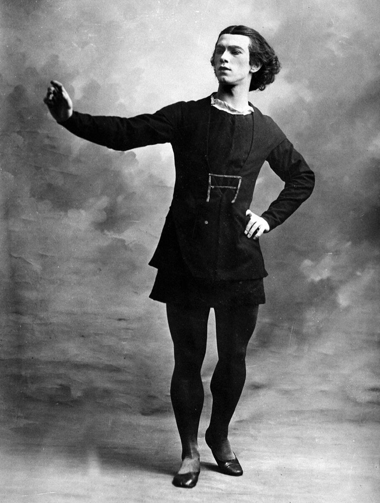
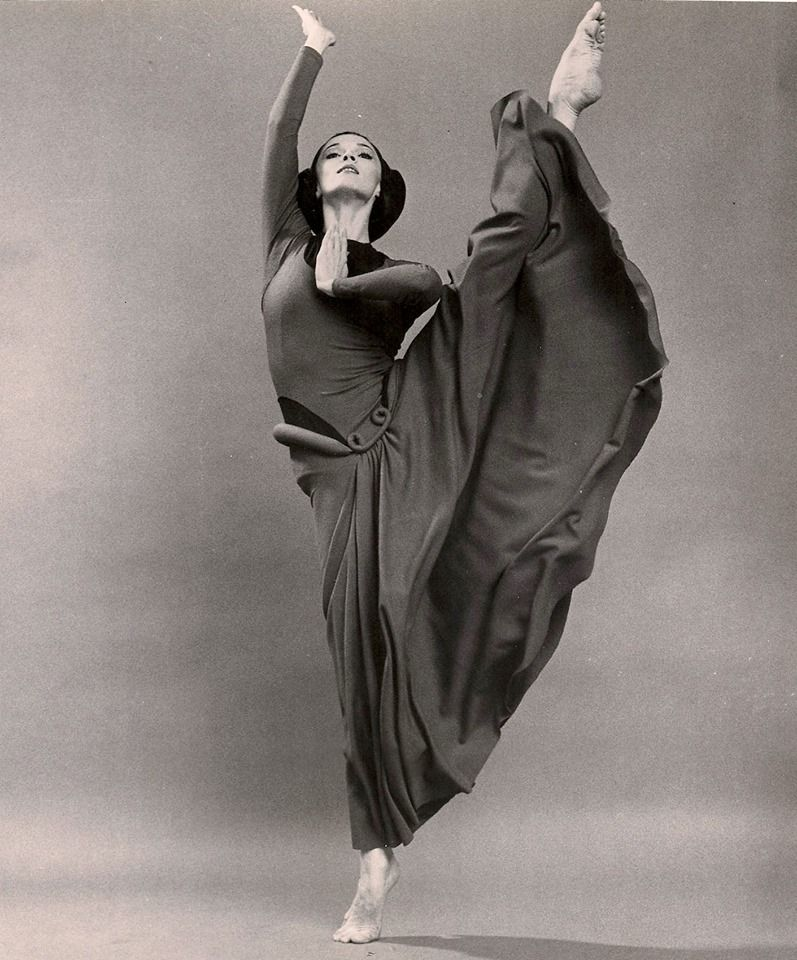
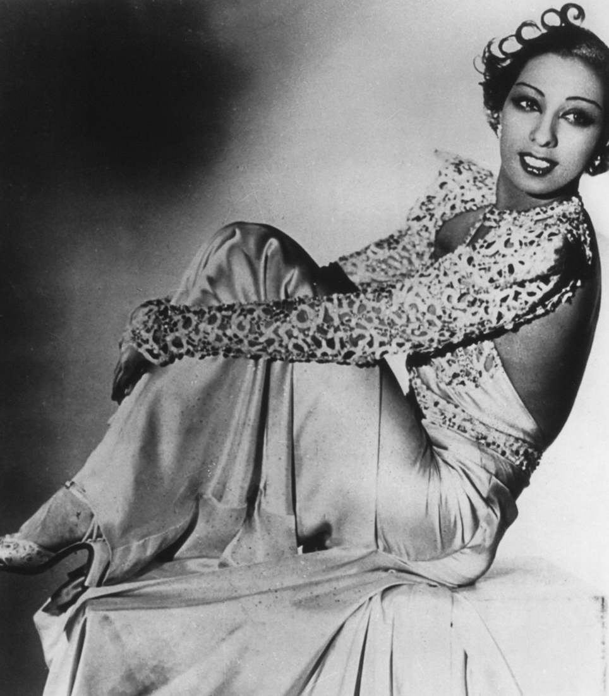
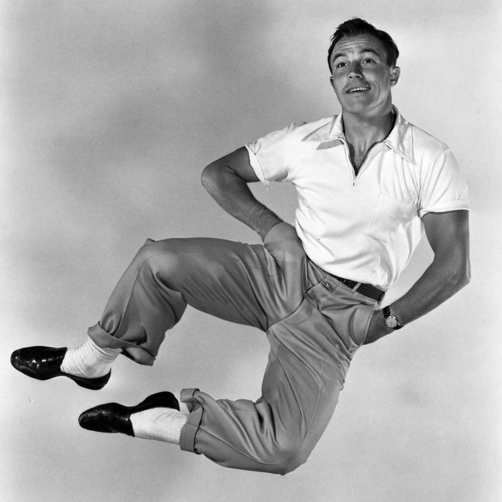
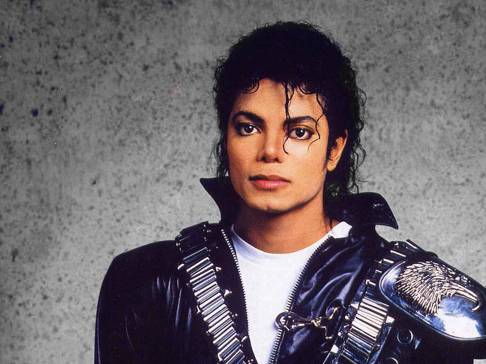
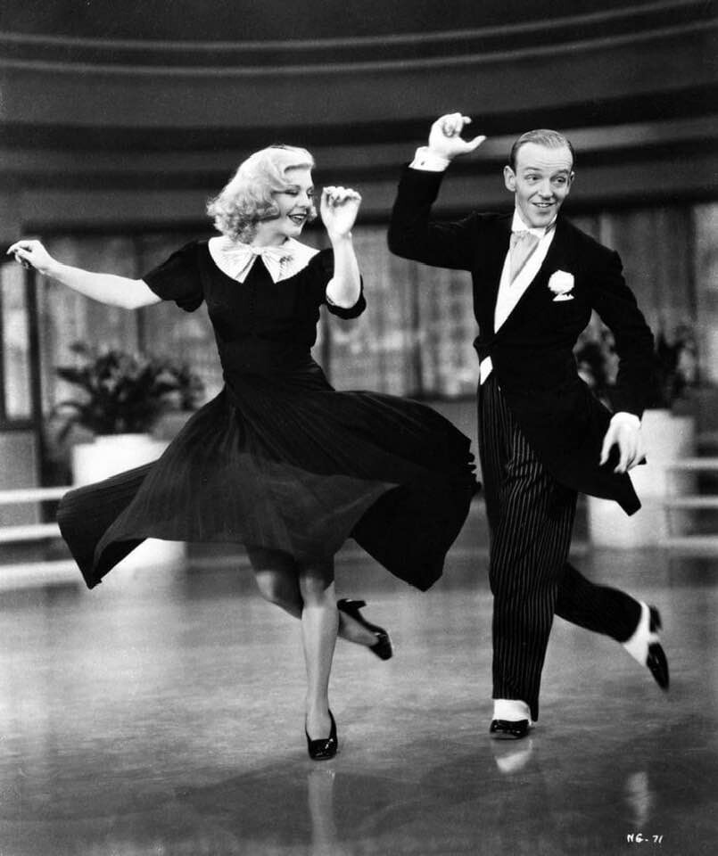

Вацлав Нижинский

Вацлав Нижинский танцевал с самого юного возраста: его отец и мать были артистами, держали собственную балетную труппу и гастролировали с ней по городам. Когда отец оставил семью, мать отдала младших детей — Вацлава и Брониславу Нижинских — в Императорское балетное училище.
Нижинский часто выступал в паре с легендарной балериной Анной Павловой. После этого он начал танцевать с Тамарой Карсавиной, основательницей Лондонской Королевской академии танца. Эта пара стала известна как «образцовые танцоры, которым нужно подражать».
Нижинский не проявлял интереса практически ни к каким дисциплинам, кроме танца. Он был сильным и выносливым, легко повторял за преподавателями сложнейшие движения. Визитной карточкой легкого пластичного юноши были высокие прыжки: он прыгал дальше всех в своем балетном классе и зависал в верхней точке, словно левитируя над полом.
Вацлав Нижинский дебютировал на сцене Мариинского театра в 15 лет — в балете «Ацис и Галатея». Это был первый спектакль, который балетмейстер Михаил Фокин ставил на сцене Мариинки. И балет уже был новаторским: хореограф разместил артистов на нескольких уровнях — некоторые из них сидели и лежали на сцене, — и отказался от традиционного в те годы симметричного рисунка танца. Но консервативные зрители были потрясены не столько постановкой, сколько дебютантом Нижинским: после его выступления публика кричала «Браво!» и вызывала «прыгучего чертенка» на бис.
Марта Грэм

Марта Грэм считается матерью современного танца. Она первой создала полностью современную технику танца, а также поставила хореографию более ста пятидесяти произведений в течение своей жизни. Творчество Грэм сильно повлияло на дальнейшее развитие современного танца.
Техника танца, которую создавала Марта, сильно шла вразрез с классическим балетом, а использование ей специфических движений тела стало революционным в танцевальном мире. Грэм даже сумела создать «язык движений», основанный на способностях человеческого тела. Марта занималась танцами и хореографией более семидесяти лет.
Жозефина Бейкер

Хотя все связывают Жозефину Бейкер в первую очередь с веком джаза, ее танцы по-прежнему пользуются большим уважением в мире танца, спустя 110 лет после ее рождения. Жозефина Бейкер стала первой в мире знаменитостью африканского происхождения и очаровала Париж в 1925 году своей экзотикой и талантом, станцевав в «La Revue Nègre». Жозефина Бейкер сполна отблагодарила французов за то, что те так любили ее, приняв гражданство Франции в 1937 году.
В этой стране она не чувствовала такой же уровень расовых предрассудков, который был распространен в Соединенных Штатах в то время. Ближе к концу жизни она из-за финансовых трудностей вернулась на сцену, триумфально выступив на Бродвее в 1970 году и в Париже в 1975 году. Она умерла в тот же год от кровоизлияния в мозг, через неделю после открытия ретроспективного шоу в Париже.
Джин Келли

Джин Келли считался одной из самых больших звезд и новаторов во время золотого века мюзиклов в Голливуде. Келли считал, что его собственный стиль является гибридом различных стилей танца, в том числе современного танца, балета и степа.
Келли принес танец в мир кино, буквально используя каждый сантиметр сценической площадки, чтобы «вырваться» из двумерности фильмов. Наследие Келли до сих пор ощущается в музыкальной видеоиндустрии. Уже никогда не будет настоль уникального человека, как Келли, на чьих работах учатся целые поколения американских танцоров.
Майк Джексон

Майкл Джексон был тем человеком, который сумел сделать музыкальные видео модным трендом. Также именно он смог сделать танцы существенным элементом современной поп-музыки. Движения Джексона уже стали стандартом в мире поп и хип-хоп музыки. Большинство современных поп-икон, таких как Джастин Бибер, Ашер и Джастин Тимберлейк, признали, что стиль Майкла Джексона оказал на них сильное влияние. Его вклад в современный танец был очень оригинальным, поскольку Джексон был новатором- самоучкой, который разрабатывал новые танцевальные движения чисто «на таланте», без часто ограничивающего полет фантазии формального обучения.
Его природная грация, гибкость и удивительное чувство ритма способствовали созданию «стиля Джексона». Мало кто из его поклонников знает, что на заре своей карьеры Джексон пытался «выполнять пируэты, как Барышников» и «отбивать чечетку, как Фред Астер», но с треском провалился. Славу Джексону принес собственный уникальный стиль.
Фред Астер и Джинджер Роджерс
